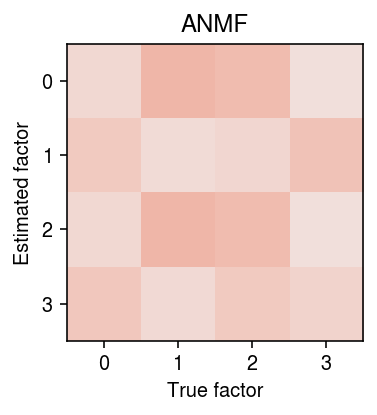
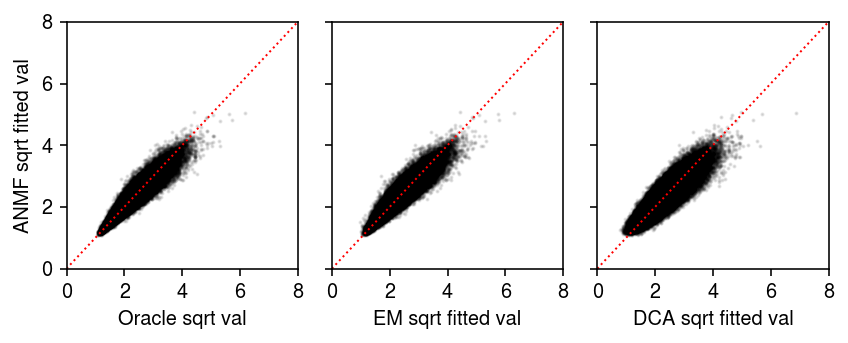
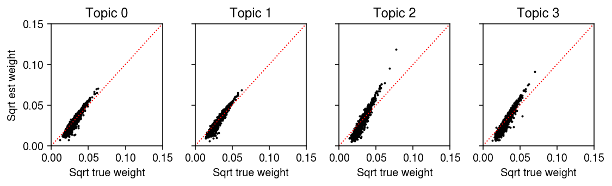

Fully unsupervised topic models of scRNA-seq time course data
Table of Contents
Introduction
In our prior work (Sarkar et al. 2019), we introduced a factor model to capture between donor individual variation in the mean and variance of gene expression in a single cell type \( \DeclareMathOperator\Gam{Gamma} \DeclareMathOperator\Poi{Poisson} \DeclareMathOperator\argmin{arg min} \newcommand\mf{\mathbf{F}} \newcommand\ml{\mathbf{L}} \newcommand\mx{\mathbf{X}} \newcommand\vl{\mathbf{l}} \newcommand\vx{\mathbf{x}} \)
\begin{align*} x_{ij} &\sim \Poi(x_i^+ \lambda_{ij})\\ \lambda_{ij} &\sim \pi_{ij} \delta_0(\cdot) + (1 - \pi_{ij}) \Gam(\phi_{ij}^{-1}, \mu_{ij}^{-1} \phi_{ij}^{-1})\\ \ln \mu_{ij} &= (\ml \mf_\mu')_{ij}\\ \ln \phi_{ij} &= (\ml \mf_\phi')_{ij}\\ \operatorname{logit} \pi_{ij} &= (\ml \mf_\pi')_{ij}\\ \end{align*}where
- \(x_{ij}\) is the number of molecules of gene \(j = 1, \ldots, p\) observed in cell \(i = 1, \ldots, n\)
- cells are taken from \(m\) donor individuals, \(\ml\) is \(n \times m\), each \(\mf_{\cdot}\) is \(p \times m\)
- assignments of cells to donors (loadings) \(l_{ik} \in \{0, 1\}\) are known and fixed.
We are now interested in several lines of questions:
- If we analyze this kind of data in a fully unsupervised manner, can we recover the assignments of cells to donors? This approach has been previously proposed in our specific factor model (Risso et al. 2018). If not, what do we recover?
- Can we generalize this analysis approach to data which additionally has multiple cell types, and then multiple time points?
- Can we implement this approach without forming entire products \(\ml\mf'\)? Can we implement each update without looking at the entire data \(\mx\)? How much faster can we get than existing methods? Can we analyze datasets which are currently impossible to analyze (due to size), e.g. Human Cell Atlas? As references, compare against scVI, cisTopic, fastTopics
Setup
Submitted batch job 83345
import anmf import anndata import dca.api import numpy as np import pandas as pd import pickle import rpy2.robjects.packages import rpy2.robjects.pandas2ri import scanpy as sc import scipy.io as si import scipy.sparse as ss import scipy.stats as st import scmodes import sklearn.decomposition as skd import time import time import torch import torch.utils.data as td matrix = rpy2.robjects.packages.importr('Matrix') ft = rpy2.robjects.packages.importr('fastTopics') rpy2.robjects.pandas2ri.activate()
%matplotlib inline %config InlineBackend.figure_formats = set(['retina'])
import colorcet import matplotlib import matplotlib.pyplot as plt plt.rcParams['figure.facecolor'] = 'w' plt.rcParams['font.family'] = 'Nimbus Sans'
Methods
Amortized NMF
Amortized inference (Shu 2017, Shu et al. 2018) refers to a strategy to efficiently solve a large (possibly infinite) collection of optimization problems:
\[ \theta^* = \argmin_{\theta} f(\theta, \phi), \]
where \(\phi \in \Phi\) is some context variable. Rather than solving one problem for each \(\phi \in \Phi\), we learn a function \(h_\alpha\) parameterized by \(\alpha\) which predicts \(\theta^*\) from \(\phi\)
\[ \alpha^* = \argmin_\alpha E_{\phi \sim \hat{p}(\phi)}[f(h_\alpha(\phi), \phi)], \]
where \(\hat{p}(\phi)\) denotes the empirical distribution of \(\phi\) in the training data. The function \(h_\alpha\) amortizes inference over the training data examples by coupling the optimization problems together, and indeed amortizes inference over unseen examples also.
As a concrete example, NMF (Lee and Seung 2001, Cemgil 2009) can be written
\begin{align*} \vl_i^* &= \argmin_{\vl_i} f(\vl_i, \vx_i, \mf)\\ f(\vl_i, \vx_i, \mf) &\triangleq \sum_j \operatorname{Poisson}(x_{ij}; \textstyle\sum_k l_{ik} f_{jk}), \end{align*}where \(\vx_i\) is the context variable, and the goal is to learn \(h_\alpha\) which maps observations \(\vx_i\) to loadings \(\vl_i\). (Here, we are simplifying by holding \(\mf\) fixed. In this setup, we treat the \(\vl_i\) as local latent variables, and \(\mf\) as a global latent variable. These can be optimized in alternating phases.) The resulting optimization problem can be solved by introducing an encoder network \(h_\alpha\), which has been previously proposed (Lopez et al. 2018, Eraslan et al. 2018).
Existing methods have been introduced with the motivation that auto-encoding
networks can represent non-linear mappings into latent spaces; however, the
gain in explanatory power of such methods is unclear. Amortized inference
suggests a simpler, more compelling motivation to explore these methods:
they enable the use of stochastic optimization methods to analyze large data
sets (for example, those which do not fit in memory). However, existing
software implementations have a major limitation: they do not support sparse
matrices on the GPU, making it either impossible to analyze complete data
sets, or introducing a major bottleneck in moving minibatches to the GPU. We
implement this functionality in the Python package anmf.
Amortized LDA
NMF is intimately connected to LDA via the Multinomial-Poisson transform (Baker 1994). Briefly, if we have an MLE for NMF and scale \(\ml\) and \(\mf\) to satisfy the constraints \(\sum_k l_{ik} = 1\), \(\sum_k f_{jk} = 1\), we recover an MLE for the Multinomial likelihood underlying LDA. This fact suggests an amortized inference scheme for maximum likelihood estimation of topic models:
\begin{align*} x_{ij} \mid s_i, \vl_i, \mf &\sim \operatorname{Poisson}(s_i \sum_k l_{ik} f_{jk})\\ \vl_i &= h(\vx_i) \end{align*}where \(h\) is a neural network with softmax output. Unlike previous approaches for amortized inference in topic models (Srivastava et al. 2017), we are not concerned with recovering an approximate posterior over \(\mathbf{L}, \mathbf{F}\), simplifying the problem.
iPSC data
Sarkar et al. 2019 generated scRNA-seq data for 9,957 genes in 5,597 cells derived from 53 donors. Read the data.
keep_samples = pd.read_table('/project2/mstephens/aksarkar/projects/singlecell-qtl/data/quality-single-cells.txt', index_col=0, header=None) keep_genes = pd.read_table('/project2/mstephens/aksarkar/projects/singlecell-qtl/data/genes-pass-filter.txt', index_col=0, header=None) annotations = pd.read_table('/project2/mstephens/aksarkar/projects/singlecell-qtl/data/scqtl-annotation.txt') annotations = annotations.loc[keep_samples.values.ravel()] header = sorted(set(annotations['chip_id'])) umi = pd.read_table('/project2/mstephens/aksarkar/projects/singlecell-qtl/data/scqtl-counts.txt.gz', index_col=0).loc[keep_genes.values.ravel(),keep_samples.values.ravel()] gene_info = pd.read_table('/project2/mstephens/aksarkar/projects/singlecell-qtl/data/scqtl-genes.txt.gz', index_col=0)
Convert to sparse h5ad.
del annotations["index"] x = anndata.AnnData(ss.csr_matrix(umi.values.T), obs=annotations, var=gene_info.loc[umi.index]) x.write('/project2/mstephens/aksarkar/projects/singlecell-ideas/data/ipsc/ipsc.h5ad', compression=None, force_dense=False)
iPSC CM data
Selewa et al. 2019 generated scRNA-seq for a time course differentiating iPSCs into cardiomyocytes.
10-way mixture
Read the FACS sorted data sets from Zheng et al 2017.
keys = ( 'b_cells', 'cd34', 'cd4_t_helper', 'cd56_nk', 'cytotoxic_t', 'memory_t', 'naive_cytotoxic', 'naive_t', 'regulatory_t', 'cd14_monocytes', )
data = {k: scmodes.dataset.read_10x(f'/project2/mstephens/aksarkar/projects/singlecell-ideas/data/10xgenomics/{k}/filtered_matrices_mex/hg19/', return_adata=True, min_detect=0) for k in keys}
Concatenate the data, then take genes with observations in at least 0.1% of cells.
x = data[keys[0]].concatenate(*[data[k] for k in keys[1:]], join='inner', batch_key='cell_type', batch_categories=keys) sc.pp.filter_genes(x, min_cells=1)
Report the dimensions.
x.shape
(94655, 21952)
Write out the data.
x.obs = x.obs.rename({0: 'barcode'}, axis=1) x.var = x.var.rename({0: 'ensg', 1: 'name'}, axis=1) x.write('/scratch/midway2/aksarkar/ideas/zheng-10-way.h5ad')
Census of Immune Cells
We previously processed the Census of Immune Cells.
Read the sparse data. (20 seconds)
y_csr = ss.load_npz('/scratch/midway2/aksarkar/modes/immune-cell-census.npz')
Read the metadata.
genes = pd.read_csv('/scratch/midway2/aksarkar/modes/immune-cell-census-genes.txt.gz', sep='\t', index_col=0) donor = pd.Categorical(pd.read_csv('/scratch/midway2/aksarkar/modes/immune-cell-census-samples.txt.gz', sep='\t', index_col=0)['0'])
Mouse Organogenesis Cell Atlas
Cao et al. 2019 generated an atlas of 2M mouse cells, analyzed by Svensson and Pacther 2019. Download the data.
sbatch --partition=build #!/bin/bash set -e CURL="curl -sfOL" $CURL "https://shendure-web.gs.washington.edu/content/members/cao1025/public/mouse_embryo_atlas/gene_count.txt" $CURL "https://shendure-web.gs.washington.edu/content/members/cao1025/public/mouse_embryo_atlas/gene_annotate.csv" $CURL "https://shendure-web.gs.washington.edu/content/members/cao1025/public/mouse_embryo_atlas/cell_annotate.csv"
Submitted batch job 66386315
Read the data. (31 mins)
x = si.mmread('/scratch/midway2/aksarkar/ideas/gene_count.txt')
The current implementation converting COO to CSR is broken. One possible explanation is that the implementation of coalescing COO entries is the culprit, which isn’t needed for this data (there should be no duplicate row/column entries).
Figure out whether the COO data is row-major or column-major.
(x.row[:5], x.col[:5])
(array([ 57, 94, 141, 161, 279], dtype=int32), array([0, 0, 0, 0, 0], dtype=int32))
Columns are samples, which means we can compress the indices and transpose in one shot.
indices = x.row indptr = np.hstack((0, 1 + np.where(np.diff(x.col))[0], x.nnz))
Make sure the compression was correct.
for j in range(10): assert (x.data[x.col == j] == x.data[indptr[j]:indptr[j+1]]).all()
We could actually get away with using np.int16, but we need torch.int32
on the GPU.
x.data.max()
1554
y = ss.csr_matrix((x.data.astype(np.int32), indices, indptr), shape=tuple(reversed(x.shape)))
Report the dimensions of the data.
y.shape
(2058652, 26183)
Write out the sparse data as npz. (10 minutes)
ss.save_npz('/scratch/midway2/aksarkar/ideas/moca.npz', y)
Get its size on disk.
ls -lh /scratch/midway2/aksarkar/ideas/moca.npz
-rw-rw-r-- 1 aksarkar aksarkar 2.5G Mar 15 21:20 /scratch/midway2/aksarkar/ideas/moca.npz
Read the data.
x = ss.load_npz('/scratch/midway2/aksarkar/ideas/moca.npz') obs = pd.read_csv('/scratch/midway2/aksarkar/ideas/cell_annotate.csv') var = pd.read_csv('/scratch/midway2/aksarkar/ideas/gene_annotate.csv')
Results
Simulation
Simulate a simple example.
np.random.seed(0) n = 512 p = 1000 k = 4 l = np.random.lognormal(sigma=0.5, size=(n, k)) f = np.random.lognormal(sigma=0.5, size=(p, k)) x = np.random.poisson(l @ f.T) s = x.sum(axis=1)
Fit NMF via EM. Report the time elapsed (minutes).
start = time.time() lhat0, fhat0, loss0 = scmodes.lra.nmf(x, rank=k, tol=1e-4, max_iters=50000, verbose=True) elapsed = time.time() - start elapsed / 60
5.910964751243592
Save the fit.
with open('/scratch/midway2/aksarkar/ideas/anmf-sim.pkl', 'wb') as _f: pickle.dump((lhat0, fhat0, loss0), _f)
Read the fit.
with open('/scratch/midway2/aksarkar/ideas/anmf-sim.pkl', 'rb') as _f: lhat0, fhat0, loss0 = pickle.load(_f)
Peter Carbonetto previously derived the KKT conditions for the NMF objective. Report the maximum absolute KKT residual.
# Important: our NMF implementation does not remove the size factor A = x / (lhat0 @ fhat0.T) l_resid = abs(fhat0 * ((1 - A).T @ lhat0)).max() f_resid = abs(lhat0 * ((1 - A) @ fhat0)).max() l_resid, f_resid
(0.026842650024651946, 0.021118226075496564)
r = np.corrcoef(f.T, fhat0.T)[:k,k:] order = np.argmax(r, axis=1) plt.clf() plt.gcf().set_size_inches(3, 3) plt.imshow(r[:,order], cmap=colorcet.cm['coolwarm'], vmin=-1, vmax=1) plt.xticks(np.arange(k)) plt.yticks(np.arange(k)) plt.xlabel('True factor') plt.ylabel('Estimated factor') plt.title('EM') plt.tight_layout()
Fit ANMF. Report the time elapsed (seconds).
assert torch.cuda.is_available() xt = torch.tensor(x, dtype=torch.float).cuda() dense_data = td.TensorDataset(xt, torch.tensor(s, dtype=torch.float).cuda()) data = td.DataLoader(dense_data, batch_size=64, shuffle=False)
start = time.time() fit = (anmf.modules.ANMF(input_dim=x.shape[1], latent_dim=k) .fit(data, max_epochs=1000, trace=True, lr=1e-3)) elapsed = time.time() - start elapsed
36.379069805145264
Plot the optimization trace.
plt.clf() plt.gcf().set_size_inches(4, 2) plt.plot(np.log(np.array(fit.trace).ravel()), lw=1, c='k') plt.xticks(np.arange(0, 8800, 800), np.arange(0, 1100, 100)) plt.xlabel('Epoch') plt.ylabel('Neg log likelihood') plt.tight_layout()

Recover the loadings and factors. Convert the factors to topics and correlate them to each other.
d = f / f.sum(axis=0, keepdims=True) t = l * f.sum(axis=0, keepdims=True) t /= t.sum(axis=1, keepdims=True) lhat = fit.loadings(xt) fhat = fit.factors() dhat = (fhat / fhat.sum(axis=1, keepdims=True)).T that = lhat * fhat.sum(axis=1) that /= that.sum(axis=1, keepdims=True)
r = np.corrcoef(d.T, dhat.T)[:k,k:] order = np.argmax(r, axis=1) plt.clf() plt.gcf().set_size_inches(3, 3) plt.imshow(r[order], cmap=colorcet.cm['coolwarm'], vmin=-1, vmax=1) plt.xticks(np.arange(k)) plt.yticks(np.arange(k)) plt.xlabel('True factor') plt.ylabel('Estimated factor') plt.title('ANMF') plt.tight_layout()

Report the maximum absolute KKT residual.
A = x / (s.reshape(-1, 1) * lhat.dot(fhat)) l_resid = abs(fhat.T * ((1 - A).T @ lhat)).max() f_resid = abs(lhat * ((1 - A) @ fhat.T)).max() l_resid, f_resid
(0.004942970805698425, 0.0033979455942014613)
Fit DCA optimizing Poisson loss.
y = anndata.AnnData(x) # This replaces the counts with fitted lambda dca.api.dca(y, mode='denoise', ae_type='poisson', verbose=True)
Report the loss achieved by each algorithm.
pd.Series({
'oracle': -st.poisson(mu=l @ f.T).logpmf(x).mean(),
'em': loss0 / np.prod(x.shape),
'dca': -st.poisson(mu=y.X).logpmf(x).mean(),
'anmf': -st.poisson(mu=s.reshape(-1, 1) * lhat @ fhat).logpmf(x).mean(),
})
oracle 2.165755 em 2.159763 dca 2.106039 anmf 2.189601 dtype: float64
Compare fitted values against each other.
plt.clf() fig, ax = plt.subplots(1, 3, sharey=True) fig.set_size_inches(6, 2.5) anmf_lam = np.sqrt(s.reshape(-1, 1) * lhat @ fhat) ax[0].scatter(np.sqrt(l @ f.T).ravel(), anmf_lam.ravel(), s=1, c='k', alpha=0.1) ax[0].set_xlabel('Oracle sqrt val') ax[0].set_ylabel('ANMF sqrt fitted val') ax[1].scatter(np.sqrt(lhat0 @ fhat0.T).ravel(), anmf_lam.ravel(), s=1, c='k', alpha=0.1) ax[1].set_xlabel('EM sqrt fitted val') ax[2].scatter(np.sqrt(y.X).ravel(), anmf_lam.ravel(), s=1, c='k', alpha=0.1) ax[2].set_xlabel('DCA sqrt fitted val') lim = [0, 8] for a in ax: a.plot(lim, lim, lw=1, ls=':', c='r') a.set_xlim(lim) a.set_xticks(np.arange(0, 10, 2)) a.set_ylim(lim) a.set_yticks(np.arange(0, 10, 2)) fig.tight_layout()

The log likelihood achieved by ANMF is lower than the oracle. Initialize the factors from the ground truth, and see whether ANMF recovers the loadings.
data = td.DataLoader(dense_data, batch_size=64, shuffle=False) start = time.time() fit = anmf.modules.ANMF(input_dim=x.shape[1], latent_dim=k) # y = ln(1 + exp(x)) # ln(exp(y) - 1) = x fit.decoder._f.data = torch.tensor(np.log(np.exp(f.T) - 1), dtype=torch.float) fit.fit(data, max_epochs=1000, trace=True, lr=1e-3) elapsed = time.time() - start elapsed
25.099331617355347
Compare the fitted log likelihood to the oracle log likelihood.
lhat = fit.loadings(xt) fhat = fit.factors() pd.Series({ 'oracle': -st.poisson(mu=l @ f.T).logpmf(x).mean(), 'anmf': -st.poisson(mu=s.reshape(-1, 1) * lhat @ fhat).logpmf(x).mean(), })
oracle 2.165755 anmf 2.161778 dtype: float64
Plot the optimization trace.
plt.clf() plt.gcf().set_size_inches(6, 2) plt.plot(np.log(np.array(fit.trace).ravel()), lw=1, c='k') plt.xticks(np.arange(0, 8800, 800), np.arange(0, 1100, 100)) plt.xlabel('Epoch') plt.ylabel('Neg log likelihood') plt.tight_layout()
Plot the estimated loadings against the true loadings.
d = f / f.sum(axis=0, keepdims=True) t = l * f.sum(axis=0, keepdims=True) t /= t.sum(axis=1, keepdims=True) lhat = fit.loadings(xt) fhat = fit.factors() dhat = (fhat / fhat.sum(axis=1, keepdims=True)).T that = lhat * fhat.sum(axis=1) that /= that.sum(axis=1, keepdims=True)
plt.clf() fig, ax = plt.subplots(1, 4, sharex=True, sharey=True) fig.set_size_inches(8, 2.5) lim = [0, .15] for i, a in enumerate(ax.ravel()): a.scatter(np.sqrt(d[:,i]), np.sqrt(dhat[:,i]), s=1, c='k') a.plot(lim, lim, lw=1, ls=':', c='r') a.set_title(f'Topic {i}') a.set_xlim(lim) a.set_ylim(lim) for a in ax: a.set_xlabel('Sqrt true weight') ax[0].set_ylabel('Sqrt est weight') fig.tight_layout()

Report the maximum absolute KKT residual.
A = x / (s.reshape(-1, 1) * lhat.dot(fhat)) l_resid = abs(fhat.T * ((1 - A).T @ lhat)).max() f_resid = abs(lhat * ((1 - A) @ fhat.T)).max() l_resid, f_resid
(0.006189874562055951, 0.014342307636255675)
ANMF on iPSC data
Read the data.
x = anndata.read_h5ad('/project2/mstephens/aksarkar/projects/singlecell-ideas/data/ipsc/ipsc.h5ad') s = x.X.sum(axis=1)
Get the donor metadata.
keep_samples = pd.read_table('/project2/mstephens/aksarkar/projects/singlecell-qtl/data/quality-single-cells.txt', index_col=0, header=None) annotations = pd.read_table('/project2/mstephens/aksarkar/projects/singlecell-qtl/data/scqtl-annotation.txt') annotations = annotations.loc[keep_samples.values.ravel()] onehot = pd.get_dummies(annotations['chip_id'])
Fit NMF via extrapolated scd.
temp = x.X.tocoo() y = matrix.sparseMatrix(i=pd.Series(temp.row + 1), j=pd.Series(temp.col + 1), x=pd.Series(temp.data), dims=pd.Series(temp.shape))
start = time.time() fit = ft.fit_poisson_nmf(y, k=54, numiter=20, method='scd', control=rpy2.robjects.ListVector({'extrapolate': True}), verbose=True) elapsed = time.time() - start
Report the time elapsed.
elapsed / 3600, fit[-1]['timing'].values.sum() / 3600
(0.696154232290056, 0.602129444444445)
Write out the fit.
rpy2.robjects.r['saveRDS'](fit, '/scratch/midway2/aksarkar/singlecell/ipsc-nmf-scd.Rds')
<rpy2.rinterface.NULLType object at 0x7f8bf0af4780> [RTYPES.NILSXP]
Plot the objective function over time.
plt.clf() plt.gcf().set_size_inches(4, 2) plt.plot(-fit[-1]['loglik'].values.astype(float), lw=1, c='k') plt.xticks(np.arange(0, 20, 4)) plt.xlabel('Epoch') plt.ylabel('Neg log lik') plt.tight_layout()
lhat = fit.rx2('L') fhat = fit.rx2('F') s = fhat.sum(axis=0, keepdims=True) lhat *= s fhat /= s lhat /= lhat.sum(axis=1, keepdims=True)
plt.clf() plt.imshow(np.corrcoef(lhat.T, onehot.T)[:54,54:], cmap=colorcet.cm['coolwarm'], vmin=-1, vmax=1) cb = plt.colorbar() cb.set_label('Pearson corr') plt.xlabel('Donor') plt.ylabel('Factor') plt.tight_layout()
sparse_data = anmf.dataset.ExprDataset(x.X, s.A) data = td.DataLoader(sparse_data, batch_size=64, shuffle=False, collate_fn=sparse_data.collate_fn)
Run ANMF on the data. A priori, we might expect the data to be rank 53 (equal to the number of donor individuals). Indeed, this is the rank of the implicit factor model we originally fit to the data.
start = time.time() fit = (anmf.modules.ANMF(input_dim=x.shape[1], latent_dim=53) .fit(data, max_epochs=40, trace=True, verbose=True, lr=1e-2)) elapsed = time.time() - start
Report how long the optimization took (minutes).
elapsed / 60
2.7217764496803283
Plot the end of the optimization trace.
plt.clf() plt.gcf().set_size_inches(4, 2) plt.plot(np.array(fit.trace).ravel()[-100:] / (128 * x.shape[1]), lw=1, c='k') plt.xticks(np.arange(0, 125, 25), np.arange(-100, 25, 25)) plt.xlabel('Minibatches before maximum') plt.ylabel('Neg log lik per obs') plt.tight_layout()

Save the fitted model.
torch.save(fit.state_dict(), '/scratch/midway2/aksarkar/ideas/ipsc-anmf.pkl')
Load the fitted model.
fit = anmf.modules.ANMF(input_dim=x.shape[1], latent_dim=53) fit.load_state_dict(torch.load('/scratch/midway2/aksarkar/ideas/ipsc-anmf.pkl')) fit.cuda()
ANMF( (encoder): Encoder( (net): Sequential( (0): Linear(in_features=9957, out_features=128, bias=True) (1): ReLU() (2): BatchNorm1d(128, eps=1e-05, momentum=0.1, affine=True, track_running_stats=True) (3): Linear(in_features=128, out_features=53, bias=True) (4): Softplus(beta=1, threshold=20) ) ) (decoder): Pois() )
Look at the correlation between the loadings and the donor individuals.
l = np.vstack([fit.loadings(b) for b, s in data])
plt.clf() plt.gcf().set_size_inches(4, 4) plt.imshow(r, vmin=-1, vmax=1, cmap=colorcet.cm['coolwarm']) plt.xlabel('Estimated loadings') plt.ylabel('Donor individual') plt.tight_layout()
NMF on iPSC-CM data
Read the data.
x = anndata.read_h5ad('/project2/mstephens/aksarkar/projects/singlecell-ideas/data/czi/drop/czi-ipsc-cm.h5ad')
rep1 = x[x.obs['ind'] == 'Rep1'] sc.pp.filter_genes(rep1, min_cells=1) temp = rep1.X.tocoo() y = matrix.sparseMatrix(i=pd.Series(temp.row + 1), j=pd.Series(temp.col + 1), x=pd.Series(temp.data), dims=pd.Series(temp.shape))
start = time.time() fit = ft.fit_poisson_nmf(y, k=50, numiter=40, method='scd', control=rpy2.robjects.ListVector({'extrapolate': True}), verbose=True) fit = {k: v for k, v in zip(fit.names, fit)} elapsed = time.time() - start elapsed / 60
15.252534476915995
l = fit['L'] f = fit['F'] weights = l * f.sum(axis=0) scale = weights.sum(axis=1, keepdims=True) weights /= scale topics = f / f.sum(axis=0, keepdims=True)
markers = [ # iPSC 'POU5F1', # Oct-4 'SOX2', 'NANOG', # mesoderm formation 'T', # BRY/TBXT 'MIXL1', # cardiogenic mesoderm 'MESP1', 'ISL1', 'KDR', # cardiac progenitor 'NKX2-5', 'GATA4', 'TBX5', 'MEF2C', 'HAND1', 'HAND2', # cardiomyocyte 'MYL2', 'MYL7', 'MYH6', 'TNNT2' ]
r = np.corrcoef(pd.get_dummies(rep1.obs['day']).T, weights.T)[:4,4:] day = pd.get_dummies(rep1.obs['day']).values.T loss = (day @ np.log(weights) + (1 - day) @ np.log(1 - weights)) / weights.shape[0] xorder = np.argsort(np.argmax(r, axis=0)) idx = rep1.var['name'].isin(markers) yorder = np.argsort([markers.index(k) for k in rep1.var.loc[idx, 'name']]) plt.clf() fig, ax = plt.subplots(2, 1, sharex=True, gridspec_kw={'height_ratios': [1, 4.5]}) fig.set_size_inches(8, 4) im = ax[0].imshow(r[:,xorder], cmap=colorcet.cm['coolwarm'], vmin=-1, vmax=1, aspect='auto') cb = fig.colorbar(im, ax=ax[0]) cb.set_label('Correlation') ax[0].set_yticks(np.arange(len(rep1.obs['day'].cat.categories))) ax[0].set_yticklabels(rep1.obs['day'].cat.categories) ax[0].set_ylabel('Time point') im = ax[1].imshow(topics[idx][yorder][:,xorder], cmap=colorcet.cm['fire'], aspect='auto', norm=matplotlib.colors.LogNorm()) cb = fig.colorbar(im, ax=ax[1]) cb.set_label('Relative expression') ax[1].set_xlabel('Topic') ax[1].set_ylabel('Marker gene expression') ax[1].set_yticks(np.arange(len(markers))) ax[1].set_yticklabels(rep1.var.loc[idx, 'name'][order]) fig.tight_layout()
Trace the expression of POU5F1 over time.
cm = plt.get_cmap('Dark2') days = (0, 1, 3, 7) query = (weights @ topics[rep1.var['name'] == 'POU5F1'].T).ravel() plt.clf() plt.gcf().set_size_inches(3, 3) grid = np.linspace(0, query.max(), 1000) for i, k in enumerate(days): f = st.gaussian_kde(query[rep1.obs['day'] == k]) plt.plot(grid, f(grid), c=cm(i), lw=1, label=k) plt.xlim(0, grid.max()) plt.ylim(0, 35000) plt.legend(frameon=False, title='Time point') plt.title('POU5F1') plt.xlabel('Latent gene expression') plt.ylabel('Density') plt.tight_layout()
Repeat the analysis for replicate 2.
rep2 = x[x.obs['ind'] == 'Rep2'] sc.pp.filter_genes(rep2, min_cells=1) temp = rep2.X.tocoo() y = matrix.sparseMatrix(i=pd.Series(temp.row + 1), j=pd.Series(temp.col + 1), x=pd.Series(temp.data), dims=pd.Series(temp.shape)) fit = ft.fit_poisson_nmf(y, k=50, numiter=40, method='scd', control=rpy2.robjects.ListVector({'extrapolate': True}), verbose=True) fit = {k: v for k, v in zip(fit.names, fit)} l = fit['L'] f = fit['F'] weights = l * f.sum(axis=0) scale = weights.sum(axis=1, keepdims=True) weights /= scale topics = f / f.sum(axis=0, keepdims=True)
r = np.corrcoef(pd.get_dummies(rep2.obs['day']).T, weights.T)[:5,5:] day = pd.get_dummies(rep2.obs['day']).values.T xorder = np.argsort(np.argmax(r, axis=0)) idx = rep2.var['name'].isin(markers) yorder = np.argsort([markers.index(k) for k in rep2.var.loc[idx, 'name']]) plt.clf() fig, ax = plt.subplots(2, 1, sharex=True, gridspec_kw={'height_ratios': [1, 4.5]}) fig.set_size_inches(8, 4) im = ax[0].imshow(r[:,xorder], cmap=colorcet.cm['coolwarm'], vmin=-1, vmax=1, aspect='auto') cb = fig.colorbar(im, ax=ax[0]) cb.set_label('Correlation') ax[0].set_yticks(np.arange(len(rep2.obs['day'].cat.categories))) ax[0].set_yticklabels(rep2.obs['day'].cat.categories) ax[0].set_ylabel('Time point') im = ax[1].imshow(topics[idx][yorder][:,xorder], cmap=colorcet.cm['fire'], aspect='auto', norm=matplotlib.colors.LogNorm()) cb = fig.colorbar(im, ax=ax[1]) cb.set_label('Relative expression') ax[1].set_xlabel('Topic') ax[1].set_ylabel('Marker gene') ax[1].set_yticks(np.arange(len(markers))) ax[1].set_yticklabels(rep2.var.loc[idx, 'name'][order]) fig.tight_layout()
Try jointly analyzing everything.
sc.pp.filter_genes(x, min_cells=1) temp = x.X.tocoo() y = matrix.sparseMatrix(i=pd.Series(temp.row + 1), j=pd.Series(temp.col + 1), x=pd.Series(temp.data), dims=pd.Series(temp.shape))
fit = ft.fit_poisson_nmf(y, k=11, numiter=40, method='scd', control=rpy2.robjects.ListVector({'extrapolate': True}), verbose=True) fit = {k: v for k, v in zip(fit.names, fit)} l = fit['L'] f = fit['F'] weights = l * f.sum(axis=0) scale = weights.sum(axis=1, keepdims=True) weights /= scale topics = f / f.sum(axis=0, keepdims=True)
r0 = np.corrcoef(pd.get_dummies(x.obs['day']).values.T, weights.T)[:5,5:] r1 = np.corrcoef(pd.get_dummies(x.obs['ind']).values.T, weights.T)[:2,2:] xorder = np.argsort(np.argmax(r0, axis=0)) idx = x.var['name'].isin(markers) yorder = np.argsort([markers.index(k) for k in x.var.loc[idx, 'name']]) plt.clf() fig, ax = plt.subplots(3, 1, sharex=True, gridspec_kw={'height_ratios': [2, 5, 18]}) fig.set_size_inches(4, 6) im = ax[0].imshow(r1[:,xorder], cmap=colorcet.cm['coolwarm'], vmin=-1, vmax=1, aspect='auto') cb = fig.colorbar(im, ax=ax[0]) cb.set_label('Correlation') ax[0].set_ylabel('Replicate') im = ax[1].imshow(r0[:,xorder], cmap=colorcet.cm['coolwarm'], vmin=-1, vmax=1, aspect='auto') cb = fig.colorbar(im, ax=ax[1]) cb.set_label('Correlation') ax[1].set_yticks(np.arange(len(x.obs['day'].cat.categories))) ax[1].set_yticklabels(x.obs['day'].cat.categories) ax[1].set_ylabel('Time point') im = ax[2].imshow(topics[idx][yorder][:,xorder], cmap=colorcet.cm['fire'], aspect='auto', norm=matplotlib.colors.LogNorm()) cb = fig.colorbar(im, ax=ax[2]) cb.set_label('Relative expression') ax[2].set_xlabel('Topic') ax[2].set_ylabel('Marker gene') ax[2].set_yticks(np.arange(len(markers))) ax[2].set_yticklabels(x.var.loc[idx, 'name'][yorder]) fig.tight_layout()
Look at replicate 1, day 7.
query = x[np.logical_and(x.obs['ind'] == 'Rep1', x.obs['day'] == 7)] sc.pp.filter_genes(query, min_cells=1) temp = query.X.tocoo() y = matrix.sparseMatrix(i=pd.Series(temp.row + 1), j=pd.Series(temp.col + 1), x=pd.Series(temp.data), dims=pd.Series(temp.shape))
fit = ft.fit_poisson_nmf(y, k=11, numiter=40, method='scd', control=rpy2.robjects.ListVector({'extrapolate': True}), verbose=True) fit = {k: v for k, v in zip(fit.names, fit)} l = fit['L'] f = fit['F'] weights = l * f.sum(axis=0) scale = weights.sum(axis=1, keepdims=True) weights /= scale topics = f / f.sum(axis=0, keepdims=True)
ANMF on 68K PBMCs
Read the data, restricting to genes with non-zero observations in at least 1 cell.
x = scmodes.dataset.read_10x('/project2/mstephens/aksarkar/projects/singlecell-ideas/data/10xgenomics/fresh_68k_pbmc_donor_a/filtered_matrices_mex/hg19/', min_detect=0, return_adata=True) sc.pp.filter_genes(x, min_cells=1) s = x.X.sum(axis=1)
Report the dimensions.
x.shape
(68579, 20387)
Fit rank 10 ANMF.
sparse_data = anmf.dataset.ExprDataset(x.X, s.A) data = td.DataLoader(sparse_data, batch_size=128, shuffle=False, collate_fn=sparse_data.collate_fn)
start = time.time() fit = (anmf.modules.ANMF(input_dim=x.shape[1], latent_dim=10) .fit(data, max_epochs=15, trace=True, verbose=True, lr=1e-2)) elapsed = time.time() - start
Report how long the optimization took (minutes).
elapsed / 60
5.1033944328626
Plot the optimization trace, focusing on the tail.
plt.clf() plt.gcf().set_size_inches(4, 2) plt.plot(np.array(fit.trace).ravel()[-2000:] / (128 * x.shape[1]), lw=1, c='k') plt.xticks(np.arange(0, 2500, 500), np.arange(-2000, 500, 500)) plt.xlabel('Minibatches before maximum') plt.ylabel('Neg log lik per obs') plt.tight_layout()
ANMF on 10-way mixture
Read the data.
x = anndata.read_h5ad('/scratch/midway2/aksarkar/ideas/zheng-10-way.h5ad') s = x.X.sum(axis=1)
Fit ANMF. Report how long the optimization took (minutes).
sparse_data = anmf.dataset.ExprDataset(x.X, s.A) data = td.DataLoader(sparse_data, batch_size=64, shuffle=False, collate_fn=sparse_data.collate_fn)
start = time.time() fit = (anmf.modules.ANMF(input_dim=x.shape[1]) .fit(data, max_epochs=10, trace=True, verbose=True, lr=5e-3)) elapsed = time.time() - start elapsed / 60
5.154516808191935
Save the fitted model.
torch.save(fit.state_dict(), '/scratch/midway2/aksarkar/ideas/zheng-10-way-anmf.pkl')
Load the fitted model.
fit = anmf.modules.ANMF(input_dim=x.shape[1]) fit.load_state_dict(torch.load('/scratch/midway2/aksarkar/ideas/zheng-10-way-anmf.pkl')) fit.cuda()
Plot the optimization trace, focusing on the tail.
plt.clf() plt.gcf().set_size_inches(4, 2) plt.plot(np.array(fit.trace).ravel()[-2000:] / (128 * x.shape[1]), lw=1, c='k') plt.xticks(np.arange(0, 2500, 500), np.arange(-2000, 500, 500)) plt.xlabel('Minibatches before maximum') plt.ylabel('Neg log lik per obs') plt.tight_layout()

Get the loadings/factors.
l = np.vstack([fit.loadings(b) for b, s in data]) f = fit.factors()
Normalize into a topic model.
w = l * f.sum(axis=1) w /= w.sum(axis=1, keepdims=True)
Get the cell type identities.
onehot = pd.get_dummies(x.obs['cell_type'])
Estimate the correlation between the topic weights and the cell types.
r = np.corrcoef(w.T, onehot.T) plt.clf() plt.gcf().set_size_inches(4, 4) plt.imshow(r[:10,10:], cmap=colorcet.cm['coolwarm'], vmin=-1, vmax=1) plt.tight_layout()